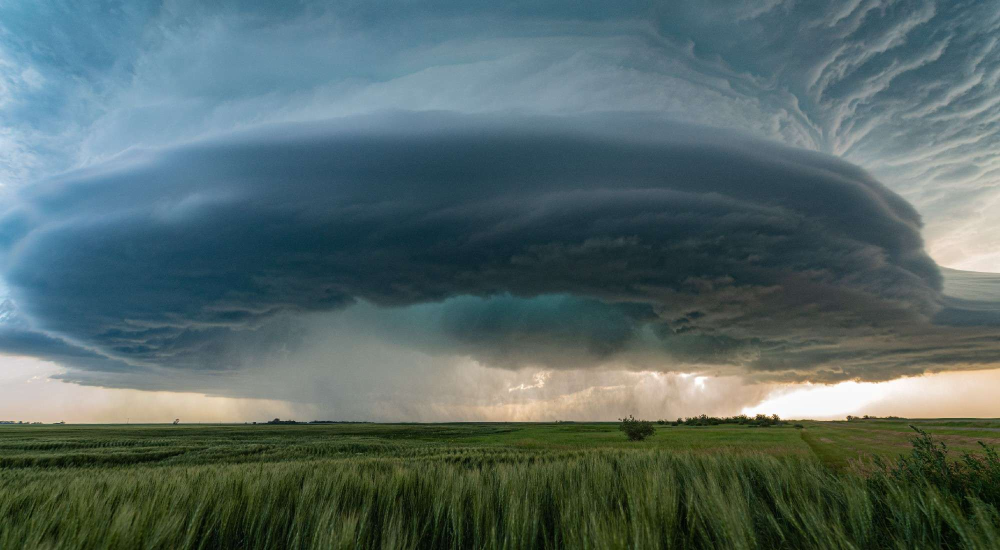
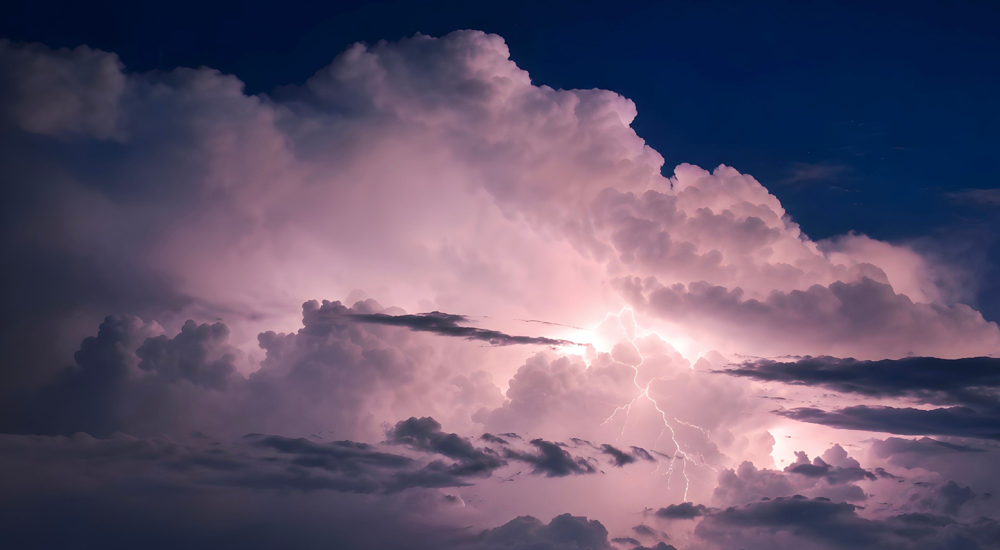
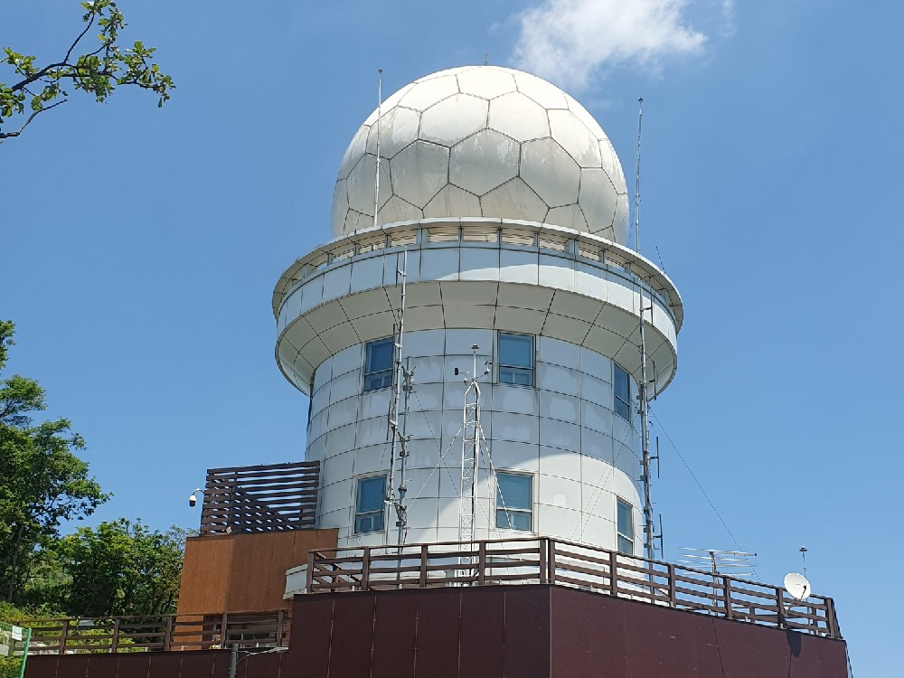
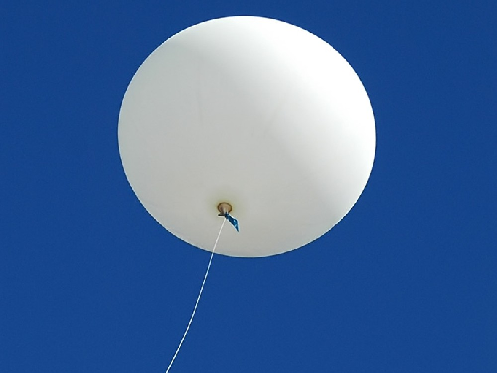
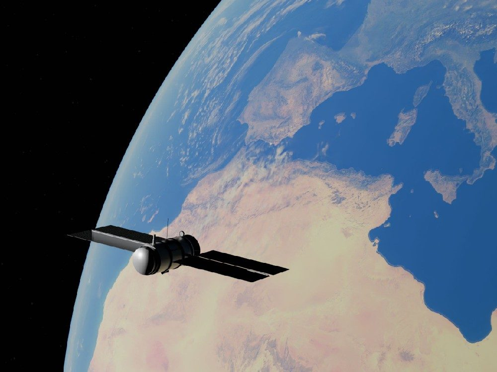
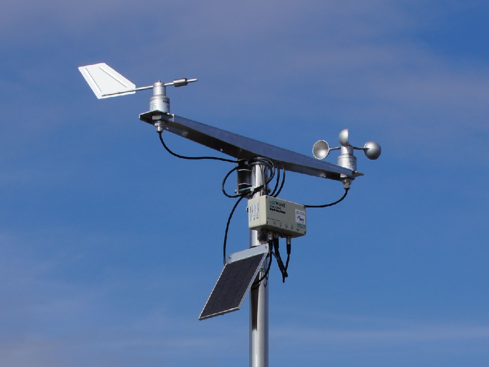
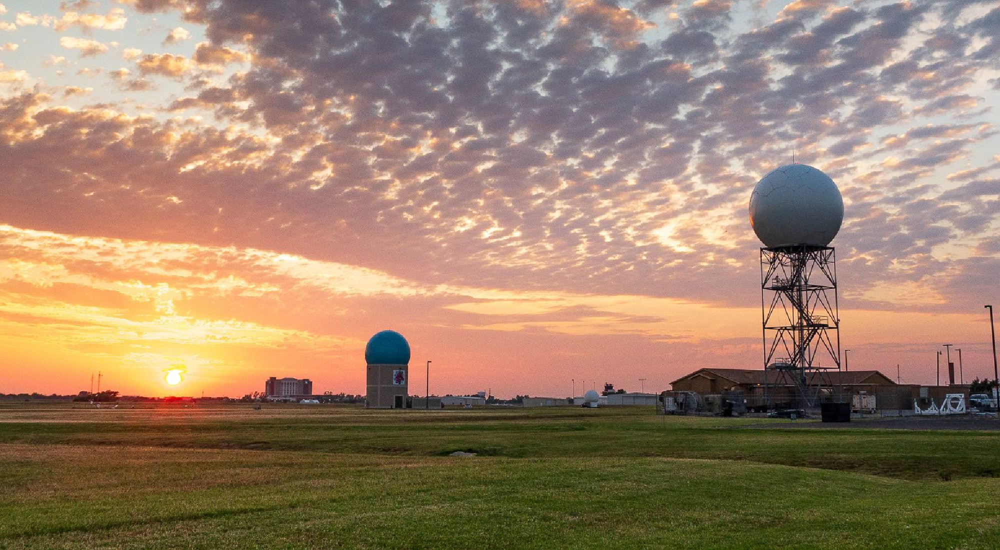
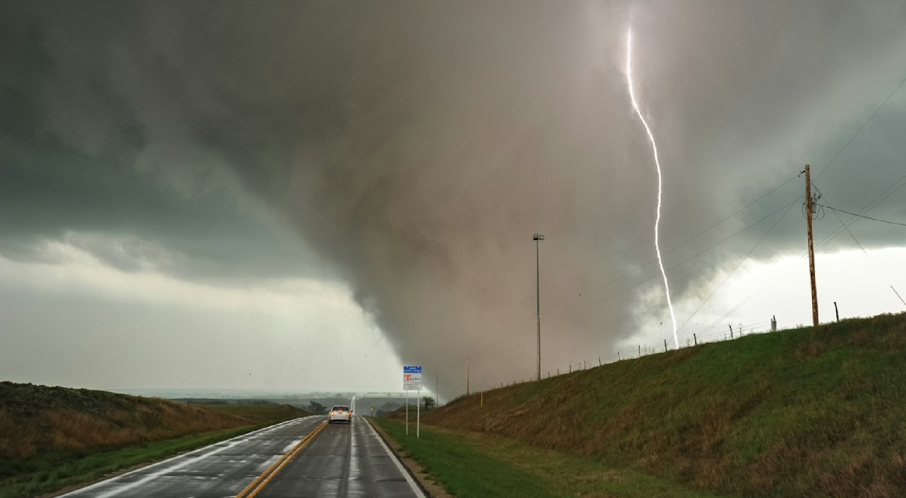

Conheça os Eventos Severos
Tornados, vendavais, granizo e ciclones: como se formam, por que também acontecem no Brasil e como se proteger.
Explorar eventos severosA ciência por trás das tempestades
A meteorologia é a ciência que estuda a atmosfera e os fenômenos que nela ocorrem, como vento, nuvens, chuva e tempestades. Ela se apoia na física e na matemática: a mecânica dos fluidos e a termodinâmica explicam por que o ar se move, se aquece e se condensa.
A energia do Sol é o ponto de partida. Ela aquece a superfície de forma desigual, e as diferenças de temperatura geram diferenças de pressão que colocam o ar em movimento. A atmosfera troca calor e umidade com oceanos e continentes, e é essa dinâmica que define o tempo.
O objetivo prático é antecipar o comportamento da atmosfera para reduzir riscos: previsões de curto prazo e avisos de eventos severos permitem que a Defesa Civil e a população se preparem.
Os fenômenos atmosféricos são classificados por escala: em geral, quanto maior o tamanho, maior a duração. Os limites variam entre autores; abaixo está a divisão de Orlanski (1975), uma das mais usadas.
Tornados, rajadas descendentes (microbursts) e turbilhões de poeira.
Tempestades, supercélulas, linhas de instabilidade e brisas marítimas.
Frentes frias, ciclones extratropicais e grandes sistemas de alta e baixa pressão.
Tornados, vendavais e granizo nascem de tempestades de mesoescala, enquanto ciclones são sistemas de escala sinótica. Esses fenômenos são o assunto de Conheça os Eventos Severos.

A formação das nuvens e das tempestades começa perto do chão. O Sol aquece a superfície, que aquece o ar em contato com ela. Esse ar fica menos denso que o ambiente ao redor e sobe, em um processo chamado convecção.
A convecção não é a única forma de o ar subir: o encontro entre massas de ar de temperaturas diferentes (as frentes) e o relevo também o forçam para cima. Os tipos de nuvem que resultam desse processo e como identificá-los estão em Conheça as Nuvens.

Prever o tempo é um trabalho em rede, que combina instituições, instrumentos e profissionais. No Brasil, vários centros analisam dados em tempo real para emitir avisos e compreender o comportamento regional da atmosfera:
Instituto Nacional de Meteorologia. Opera a rede nacional de estações e emite os avisos meteorológicos para todo o país.
Centro de Gerenciamento de Emergências Climáticas, da Prefeitura de São Paulo. Monitora o tempo e a chuva na capital paulista.
Sistema de Tecnologia e Monitoramento Ambiental do Paraná. Opera radares e estações no estado e emite alertas de tempestades.
Plataforma de Registros e Rede Voluntária de Observadores de Tempestades Severas. Equipe de voluntários que registra eventos de tempo severo no Brasil desde 2018.
Antes de um aviso, existe uma cadeia de etapas:
Clique no nome do equipamento para ver a foto e como ele funciona.

Emite pulsos de micro-ondas e mede a parte do sinal que retorna após atingir gotas de chuva, granizo ou neve. Com isso, estima a intensidade e a posição da precipitação e acompanha seu deslocamento, em um raio de cerca de 200 km ou mais, conforme o modelo. Pelo efeito Doppler, também mede a velocidade com que a chuva se aproxima ou se afasta, o que permite identificar rotação dentro das tempestades.
Mede: refletividade e velocidade radial.

Um balão de látex, inflado com hélio ou hidrogênio, carrega uma radiossonda: um conjunto de sensores que mede pressão, temperatura e umidade e, por GPS, a velocidade e a direção do vento durante a subida. Os dados seguem por rádio. O balão sobe até cerca de 30 km, onde estoura, e a sonda desce de paraquedas. Os lançamentos seguem horários internacionais padronizados, geralmente 00 e 12 UTC.
Mede: o perfil vertical da atmosfera, base para calcular parâmetros como CAPE e cisalhamento, vistos adiante.

Observam a Terra do espaço em vários canais. Os geoestacionários, a cerca de 36 mil km de altitude, permanecem sobre o mesmo ponto do equador e geram imagens em intervalos curtos, o que permite acompanhar o desenvolvimento das tempestades. Os de órbita polar, a cerca de 800 km, passam sobre cada região algumas vezes ao dia, com mais detalhe. No infravermelho, medem a temperatura do topo das nuvens. Veja como interpretar as imagens em Como identificar nuvens.
Mede: temperatura do topo das nuvens, vapor de água e cobertura de nuvens.

Conjuntos de sensores instalados no solo que registram, em intervalos regulares, temperatura e umidade do ar, pressão atmosférica, direção e velocidade do vento, precipitação e radiação solar. Seguem normas da OMM para o local e a altura dos sensores: o vento, por exemplo, é medido a 10 m de altura.
Mede: variáveis de superfície, que formam as séries históricas usadas no estudo do tempo e do clima.

As observações viram números, e alguns parâmetros resumem o quanto a atmosfera favorece tempestades. Cada um mede uma característica diferente do ambiente.
Clique em cada parâmetro para ver o que ele mede, a unidade e por que importa.
O que mede: o grau de agitação das moléculas do ar, que expressa o quão quente ou frio ele está.
Por que importa: o que define a facilidade com que o ar sobe é a variação da temperatura com a altura, o gradiente vertical. Se o ar ao redor esfria mais depressa com a altura do que a parcela que sobe, ela continua subindo. As referências são de cerca de 6 °C por km para o ar úmido e cerca de 10 °C por km para o ar seco.
O que mede: a temperatura em que o ar, resfriado a pressão constante, atinge a saturação e o vapor começa a se condensar.
Por que importa: indica a quantidade de vapor de água disponível. Quanto mais alto, mais úmido o ar e maior o potencial de chuva forte. A diferença entre a temperatura e o ponto de orvalho mostra quão perto o ar está de formar nuvens.
O que mede: o peso da coluna de ar acima de um ponto. Ao nível do mar, o valor médio é de cerca de 1013 hectopascais.
Por que importa: centros de baixa pressão favorecem a subida do ar e a formação de nuvens e chuva, enquanto centros de alta pressão favorecem o ar descendente e o tempo mais estável.
O que mede: a Energia Potencial Convectiva Disponível, ou seja, a energia por quilograma de ar que pode acelerar a parcela em ascensão pelo empuxo.
Por que importa: quanto maior o CAPE, mais fortes tendem a ser as correntes ascendentes. Valores abaixo de 1000 J/kg costumam ser considerados baixos, entre 1000 e 2500 moderados e acima de 2500 altos. O CAPE sozinho não gera uma tempestade: é preciso um mecanismo que levante o ar.
O que mede: a variação do vento (velocidade e/ou direção) com a altura, em geral calculada entre a superfície e 6 km.
Por que importa: organiza a tempestade, separando a corrente ascendente da descendente, o que permite que ela dure mais. Valores acima de cerca de 20 m/s favorecem a formação de supercélulas.
O que mede: o potencial de rotação do ar que alimenta a tempestade, calculado em relação ao movimento dela (helicidade relativa à tempestade), em geral nas camadas de 0 a 1 km e de 0 a 3 km.
Por que importa: valores altos indicam ambiente favorável à rotação da corrente ascendente, o que forma o mesociclone e aumenta a chance de tornados.
Tempestades fortes dependem da combinação de quatro ingredientes. Cada parâmetro acima ajuda a medir um deles, e a falta de qualquer um limita o que a tempestade pode se tornar:
O que é: vapor de água na camada mais baixa da atmosfera. É a fonte de energia da tempestade: ao se condensar, o vapor libera calor latente, que mantém a corrente ascendente.
Como é medida: pelo ponto de orvalho, em estações e balões. Quanto mais próximo da temperatura do ar, mais úmido o ambiente e mais baixa a base das nuvens.
Sem ela: o ar sobe apenas enquanto é forçado, e as nuvens ficam rasas.
O que é: a tendência de o ar continuar subindo quando é empurrado para cima, impulsionado pelo empuxo térmico.
Como é medida: pelo CAPE (Energia Potencial Convectiva Disponível), calculado a partir dos dados do perfil vertical da atmosfera.
Sem ela: o ar, mesmo úmido, tende a voltar à posição original após subir um pouco, gerando apenas nuvens cumulus rasas e sem tempestades.
O que é: o processo que força o ar a subir até o nível em que ele passa a subir sozinho. Pode ser o aquecimento do solo, uma frente, uma linha de instabilidade, a brisa marítima ou o relevo.
Como é identificado: em mapas de pressão e de frentes e em imagens de satélite e radar.
Sem ele: mesmo com muito CAPE, o ar pode ficar preso sob uma camada estável, a inibição convectiva, e a tempestade não se forma.
O que é: a variação do vento com a altura, em velocidade e/ou direção.
Como é medido: pela diferença entre o vento da superfície e o de 6 km, em m/s, e pela helicidade, que indica a rotação disponível.
Sem ele: a chuva da corrente descendente cai sobre a própria corrente ascendente e a enfraquece, e a tempestade dura, em geral, menos de uma hora. Com cerca de 10 a 20 m/s, as tempestades se organizam em várias células e, acima de cerca de 20 m/s, surgem as supercélulas.
Ambientes que reúnem os quatro, como um dia úmido com CAPE alto, cisalhamento forte e uma frente se aproximando, são os que favorecem tempestades severas, tema de Conheça os Eventos Severos.

Há uma diferença entre aviso e alerta: o aviso é emitido pelo INMET, e o alerta é a mensagem que a Defesa Civil envia à população, a partir da análise dos avisos e de fatores locais, como o estado dos rios e das encostas e as áreas de risco.
Os avisos do INMET usam três cores, que indicam o nível de severidade:
Situação meteorológica potencialmente perigosa. Fique atento e evite se expor a riscos desnecessários.
Situação perigosa. Mantenha-se vigilante, informe-se regularmente sobre a previsão e siga as orientações das autoridades.
Previsão de fenômenos de intensidade excepcional, com grande probabilidade de danos e riscos à integridade física ou à vida.
Os critérios mudam conforme o fenômeno. Em avisos de tempestade, por exemplo, o amarelo cobre chuva de 20 a 30 mm/h e ventos de 40 a 60 km/h, enquanto o vermelho é usado para ventos acima de 100 km/h ou chuva acima de 60 mm/h ou 100 mm por dia.
Para receber alertas da Defesa Civil, envie seu CEP por SMS para 40199. As orientações de segurança para cada evento estão em Como se proteger.
Tornados, vendavais, granizo e ciclones: como se formam, por que também acontecem no Brasil e como se proteger.
Explorar eventos severosOs dez gêneros de nuvens, como interpretar o nome de cada um e como identificá-los do solo, do satélite e do radar.
Explorar as nuvens